אורי מוסנזון - פרוייקטים
69
פרויקטים
46
Live Demos
19
AI-Powered
5
קטגוריות
1 / 33
📈
צפיות בפרויקטים
צפיות באתר
–
מבקרים
–
היום החזק
–
שינוי
–
בחרו פרויקטים מהטבלה למטה כדי לראות אותם בגרף
גררו את החלון, משכו את הקצוות או סמנו טווח חדש על הרצועה
צפיות בדפים לפי Google Analytics, מאז 3.11.2026. דף הפרויקטים עצמו נספר רק בסיכומים שלמעלה. היום הנוכחי עוד לא נגמר, ולכן הקטע האחרון בגרף מקווקו.
🚀
פרויקטים live: נסו עכשיו בדפדפן
46 פרויקטים
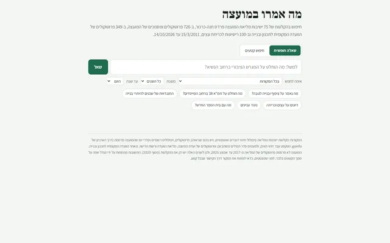
רוצים שקיפותמה אמרו במועצה ▶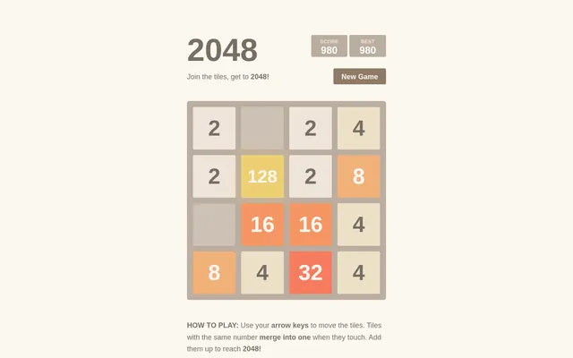
2048 ולמידת חיזוק ▶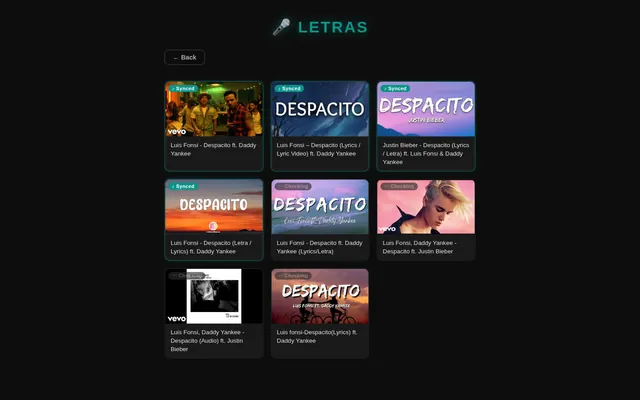
Letrasמילות שירים ▶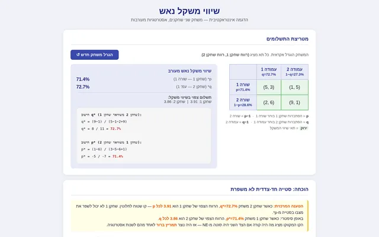
שיווי משקל נאשהדגמה ▶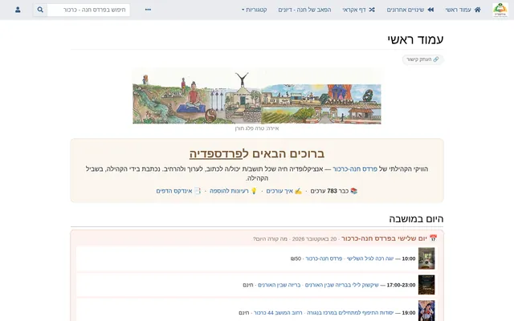
פרדספדיהויקי קהילתי ▶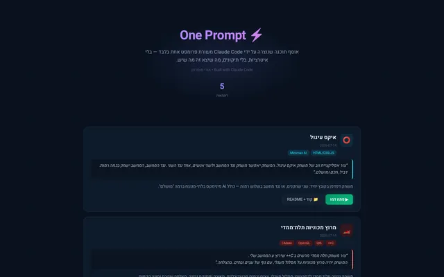
One Promptתוכנה מפרומפט אחד ▶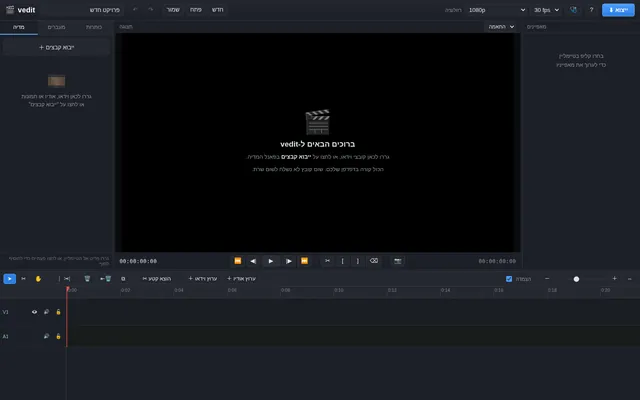
veditעורך וידאו בדפדפן ▶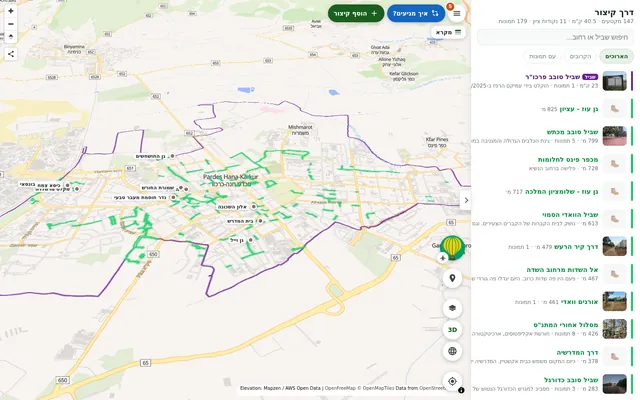
דרך קיצורשבילי פרדס חנה-כרכור ▶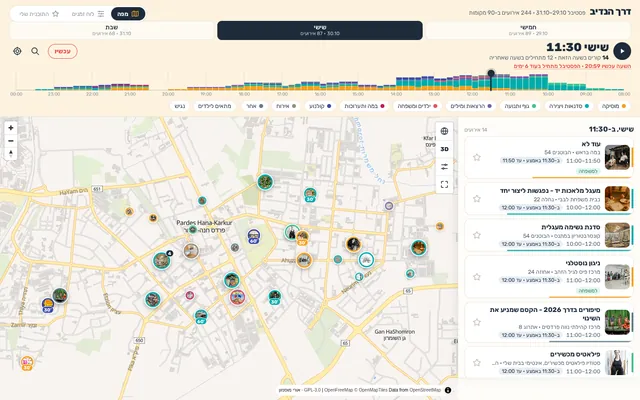
דרך הנדיבמה קורה עכשיו ▶ 🗺️ photomapמפת התמונות ▶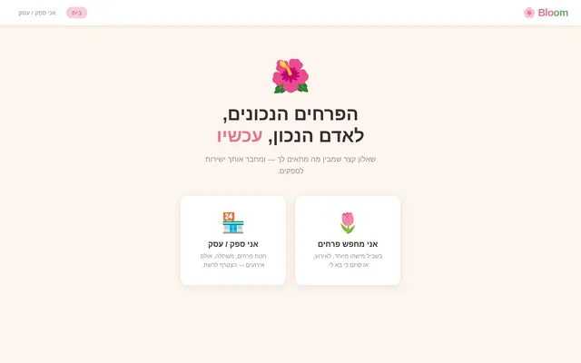
Bloomמצא את הפרחים שלך ▶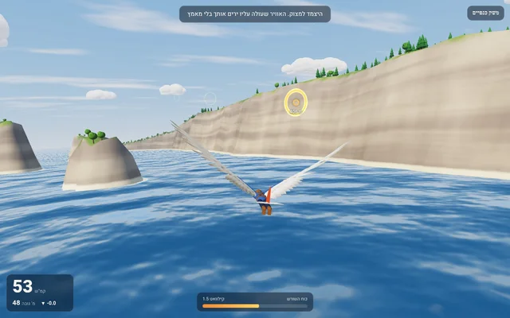
איש-ציפור ▶ 🥋 שוטוקאןקומיטה ▶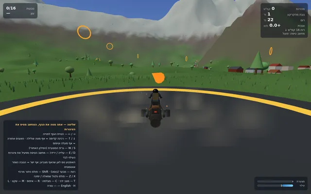
Fableאופנוע סילון מעופף ▶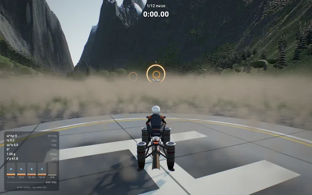
MJ-5מסלול העמק ▶ FÖHNאופנוע סילון בעמק אלפיני ▶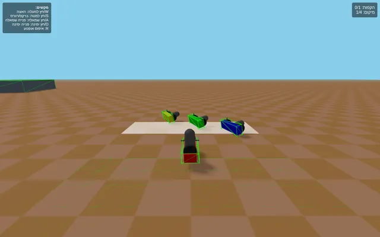
Dirt Bike Racing ▶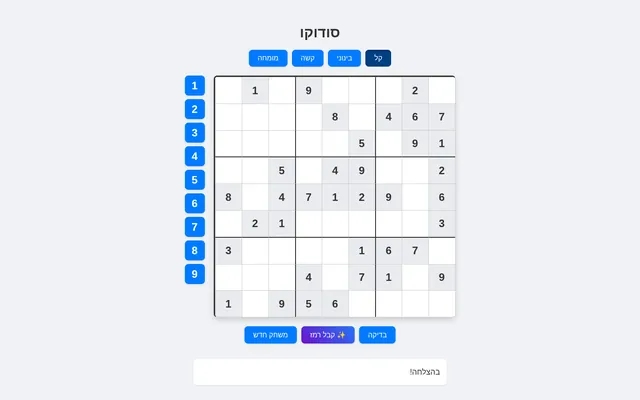
סודוקו עם רמזים חכמים ▶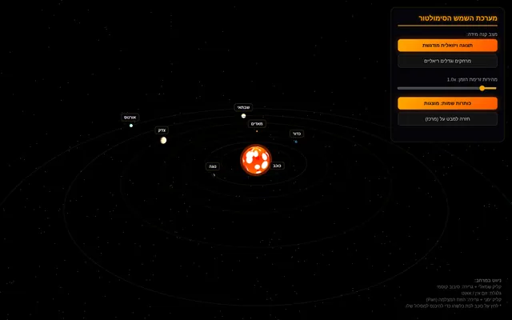
Solar System Simulation ▶ 🗳️ 61הקדנציה ▶ 🌱 אדמאמא1999–2018 ▶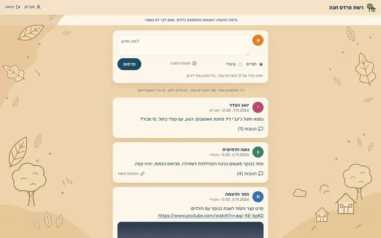
הרשת החופשית ▶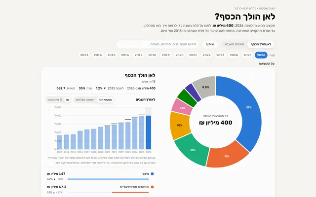
רוצים שקיפותלאן הולך הכסף ▶ 🏗️ רוצים שקיפותמה בונים לנו ▶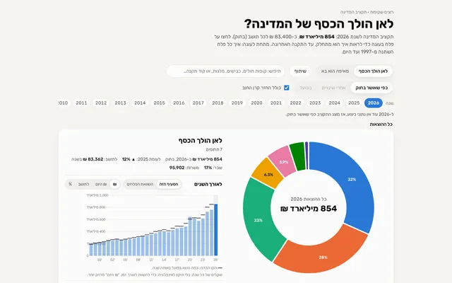
רוצים שקיפותתקציב המדינה ▶ 🗺️ שכונות פרדס חנה-כרכור ▶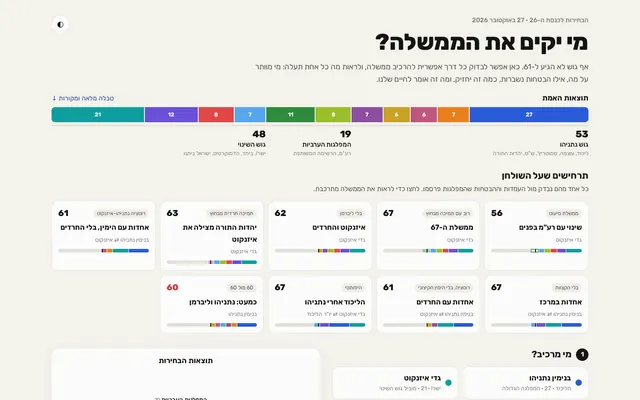
מי יקים את הממשלה? ▶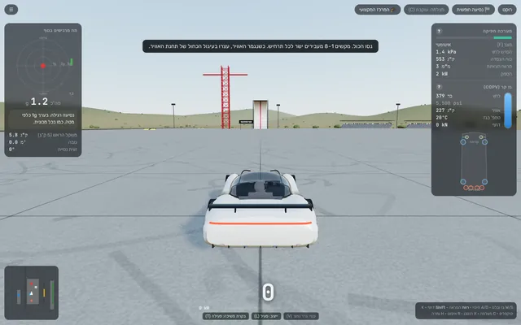
רודסטרהמכונית שנצמדת לקירות ▶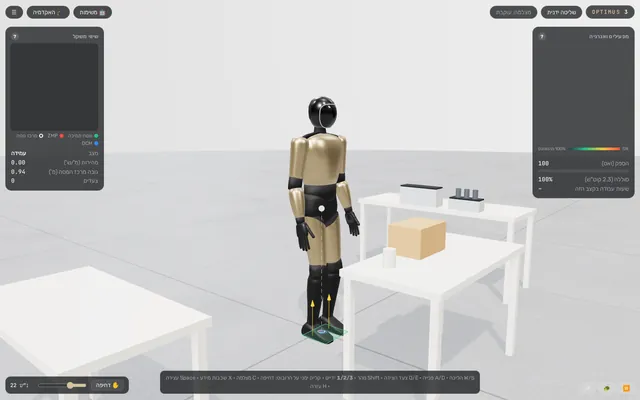
אופטימוס 3רובוט הומנואידי ▶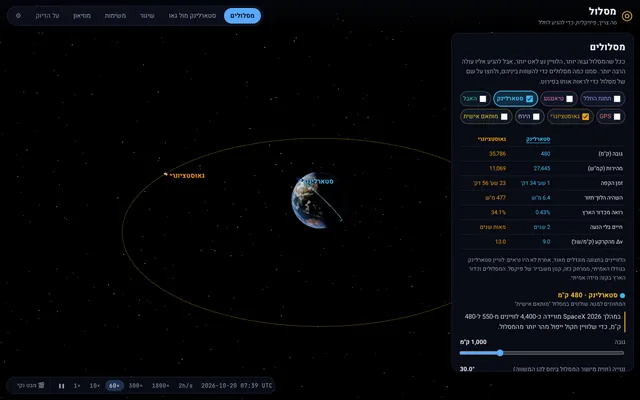
מסלולמה צריך כדי להגיע לחלל ▶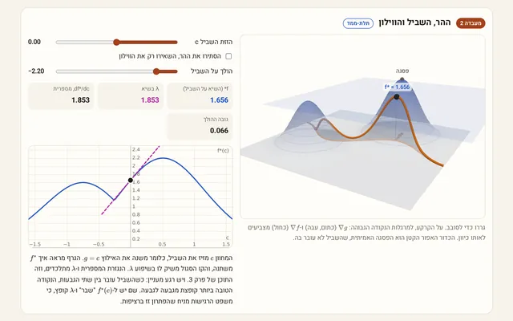
כופלי לגרנז'אופטימיזציה תחת אילוצים ▶ ζ סרטוני מתמטיקהזטה, סרגל ומחוגה, פורייה ▶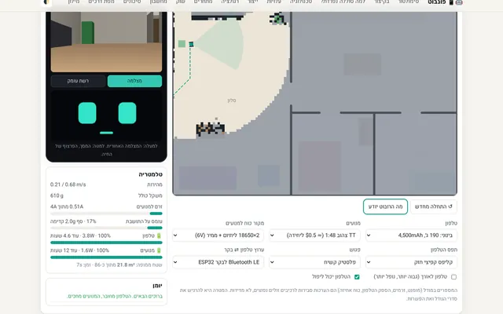
פונבוטתושבת רובוטית לטלפון ▶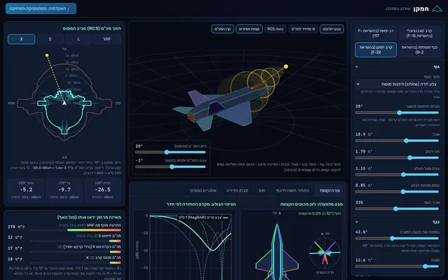
חמקןשולחן המתכנן ▶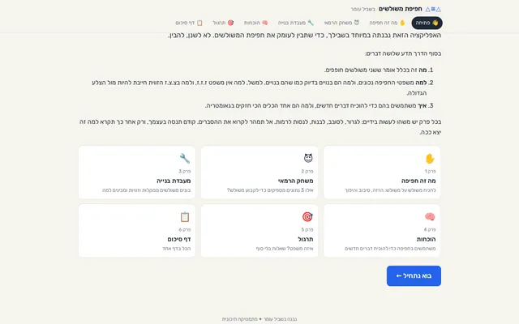
מתמטיקה תיכוניתחפיפת משולשים ▶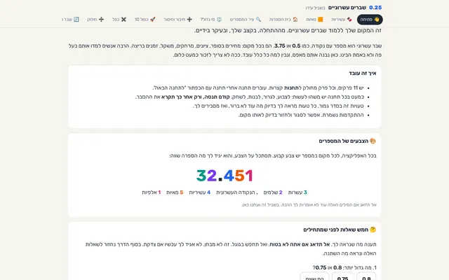
מתמטיקהשברים עשרוניים ▶ 💯 מתמטיקהאחוזים ▶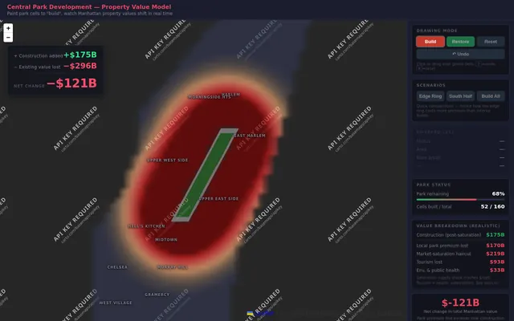
Central Park Development Model ▶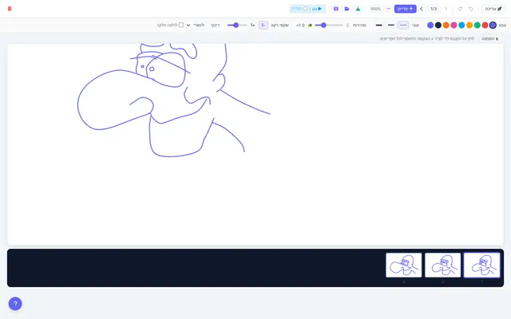
Bezier Curve Animation Editor ▶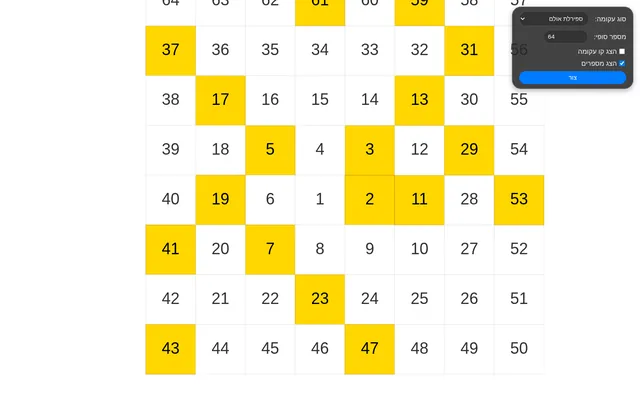
Prime Number Spirals ▶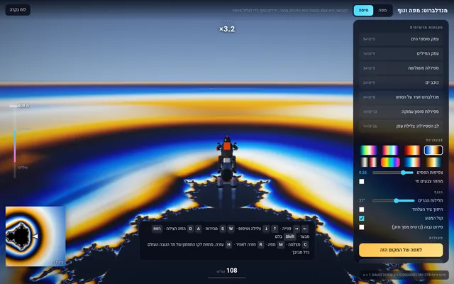
מנדלברוטמפה ונוף ▶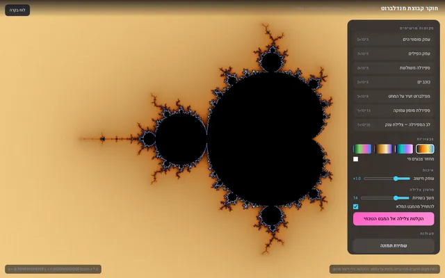
חוקר קבוצת מנדלברוט ▶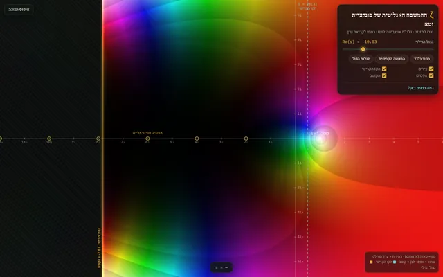
ζההמשכה האנליטית של זטא ▶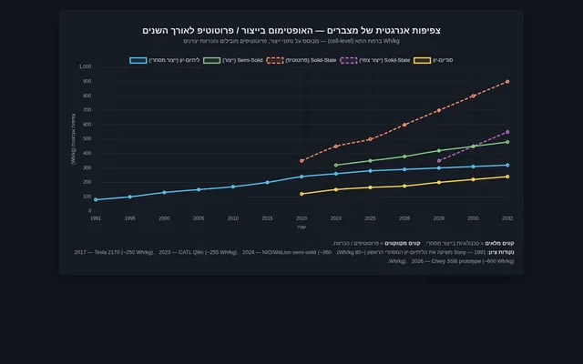
צפיפות אנרגטית של מצברים ▶ ∩ חילוץ מידע הדדי ▶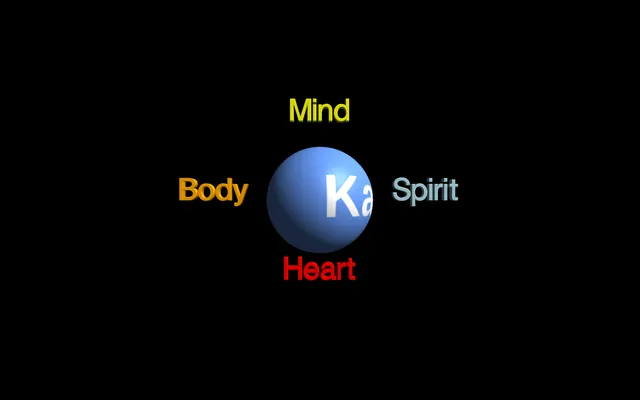
Mind · Heart · Body · Spirit ▶
🤖
פרויקטי AI
20 פרויקטים
רוצים שקיפות: מה אמרו במועצה
LIVE
חיפוש ושאלות בכל ישיבות מליאת המועצה פרדס חנה-כרכור.
75 ישיבות מהשידורים ביוטיוב, כ-91 שעות, תומללו מקומית במודל העברי של ivrit.ai. הדוברים זוהו אוטומטית עם pyannote, ושמם הוצמד על ידי מודל שפה לפי ראיות מהתמלול. החיפוש משלב התאמת מילים והתאמת משמעות (bge-m3), ומצב שאלה חופשית מנסח תשובה עם הפניה לכל מקור. כל קטע נפתח בסרטון ברגע שבו נאמר. חלק מיוזמת שקיפות מוניציפלית.
75 ישיבות מהשידורים ביוטיוב, כ-91 שעות, תומללו מקומית במודל העברי של ivrit.ai. הדוברים זוהו אוטומטית עם pyannote, ושמם הוצמד על ידי מודל שפה לפי ראיות מהתמלול. החיפוש משלב התאמת מילים והתאמת משמעות (bge-m3), ומצב שאלה חופשית מנסח תשובה עם הפניה לכל מקור. כל קטע נפתח בסרטון ברגע שבו נאמר. חלק מיוזמת שקיפות מוניציפלית.
2048 ולמידת חיזוק
LIVE
המשחק 2048, וחמישה סוכנים שלמדו לשחק בו לבד.
שחזור נאמן של המשחק המקורי בדפדפן, ולצידו למידת חיזוק באותו תקציב זמן: DQN, Actor-Critic ו-PPO ב-PyTorch על ה-GPU המקומי, רשת n-tuple עם TD על afterstates (השיטה שהספרות של 2048 מעדיפה) על ליבת CPU אחת, וניסוי שמפריד בין הייצוג לאלגוריתם: אותו TD על afterstates ברשת. כל הסוכנים משחקים בתוך הממשק ומראים מה הם חושבים על כל כיוון (הטבלה הגדולה בגרסה קטנה ובשידור חוזר). רשת ה-n-tuple מגיעה ל-2048 ב-95% מהמשחקים ול-8192 ב-61%, ועם חיפוש expectimax ל-16384 ב-20%; Actor-Critic ל-2048 ב-81%, PPO ב-30%, DQN ב-2.4%. דו"חות בעברית עם הסבר מפורט על כל שיטה, איורים ומעבדה אינטראקטיבית של רשת ה-n-tuple שלומדת בדפדפן.
שחזור נאמן של המשחק המקורי בדפדפן, ולצידו למידת חיזוק באותו תקציב זמן: DQN, Actor-Critic ו-PPO ב-PyTorch על ה-GPU המקומי, רשת n-tuple עם TD על afterstates (השיטה שהספרות של 2048 מעדיפה) על ליבת CPU אחת, וניסוי שמפריד בין הייצוג לאלגוריתם: אותו TD על afterstates ברשת. כל הסוכנים משחקים בתוך הממשק ומראים מה הם חושבים על כל כיוון (הטבלה הגדולה בגרסה קטנה ובשידור חוזר). רשת ה-n-tuple מגיעה ל-2048 ב-95% מהמשחקים ול-8192 ב-61%, ועם חיפוש expectimax ל-16384 ב-20%; Actor-Critic ל-2048 ב-81%, PPO ב-30%, DQN ב-2.4%. דו"חות בעברית עם הסבר מפורט על כל שיטה, איורים ומעבדה אינטראקטיבית של רשת ה-n-tuple שלומדת בדפדפן.
Letras — מילות שירים
LIVE
מחפשים שיר — האפליקציה מציגה מילים מסונכרנות עם הסרטון. כל מילה מתהדרת בצבע בדיוק כשהיא נשמעת, עם אפשרות תרגום לכל שפה והורדה של המילים והתרגום כקובץ וורד.
שיווי משקל נאש — הדגמה
אסטרטגיות מעורבות והלמה של ספרנר.
הגרלת מטריצת תשלומים וחישוב שיווי משקל מעורב, והדגמה של הוכחת הלמה של ספרנר: הליכות על משולש מתויג, צעד אחר צעד, עם האותיות של ההוכחה מסומנות בטקסט ובשרטוט.
הגרלת מטריצת תשלומים וחישוב שיווי משקל מעורב, והדגמה של הוכחת הלמה של ספרנר: הליכות על משולש מתויג, צעד אחר צעד, עם האותיות של ההוכחה מסומנות בטקסט ובשרטוט.
Word Embeddings — שיכון מילים
king − man + woman = queen.
אפליקציית לימוד אינטראקטיבית: מדגימה word embeddings עם אנלוגיות, חיפוש שכנים קרובים, ויזואליזציה 2D וקוויז אוטומטי.
אפליקציית לימוד אינטראקטיבית: מדגימה word embeddings עם אנלוגיות, חיפוש שכנים קרובים, ויזואליזציה 2D וקוויז אוטומטי.
Golem — תוסף VS Code
⚙ בפיתוח
תוסף קוד-פתוח ל-VS Code עם עוזר קידוד אגנטי מבוסס Claude. תמיכה מלאה ב-RTL עברית — שיחה עם AI ישירות בתוך סביבת הפיתוח.
Sidekick — דיבאג אינטגרציות
⚙ בפיתוח
כלי קוד-פתוח לדיבאג אינטגרציות: מצלם את הדפדפן ברציפות, שולח ל-AI, מזהה שגיאות אוטומטית ואפילו מגיב עצמאית דרך Selenium.
WikiVoice — ויקיפדיה מדברת
⚙ בפיתוח
קורא מאמרי ויקיפדיה בקול — מקומי, חינמי, ובפרוזודיה טבעית. מבוסס על מודל Kokoro-82M שרץ על CPU ללא אינטרנט.
Claude Auto — עוזר קולי לנהיגה
⚙ בתכנון
עוזר AI לנהיגה ידיים-פנויות: שיחות ראש-לרגל, שליחת ווצאפ בקול, ניווט — כל זה מופעל עם מילת גישה בלי לגעת בטלפון.
Agents 101 — LangChain, LangGraph & MCP
⚙ בפיתוח
מחברת לימוד אינטראקטיבית שמסבירה את הקשר בין LangChain, LangGraph ו-MCP — כיצד בונים סוכני AI מודרניים עם כלים, מצב, לולאות ופרוטוקול כלים סטנדרטי.
Nudge — ניהול כספים קולי
⚙ בפיתוח
דחיפה עדינה בכיוון הנכון — עוזר פיננסי שמאזין לך בעברית, מבין מה קנית ובכמה, מנהל את היתרה שלך ומציג סיכום הוצאות לפי קטגוריות.
Deep Course — קורס למידה עמוקה
קורס אינטראקטיבי על רשתות נוירונים מהבסיס: SGD עם ויזואליזציה אינטראקטיבית, backpropagation, גרפים חישוביים — שיעור אחר שיעור.
g4 — Gemma 4 מקומי
צ'אטבוט מקומי מבוסס Google Gemma 4 E2B דרך Ollama. ממשק ווב עם RTL, סטרימינג, Markdown ו-LaTeX. רץ על GTX 1060 6GB ללא אינטרנט. רץ מקומית בלבד, מול Ollama על המכונה.
Dragon Cloud — LLM סיני בענן
⚙ בתכנון
פריסת מודלי LLM סיניים בקוד פתוח (GLM-5, Kimi K2.5, Qwen3.5) על קלאסטר GPU בענן — inference עצמאי, עלות-תועלת, ללא תלות ב-OpenAI.
Archon — שחזור משחק קומודור 64
⚙ בפיתוח
שחזור Archon: The Light and the Dark (1983) כמשחק דפדפן — לוח אסטרטגי 9×9 עם מחזור אור/חושך, 18 כלי קסם לכל צד, קרבות action ומולטיפלייר אונליין. רץ לוקאלית כרגע.
Haskala — אדמיניסטרציה של כיתה
⚙ בפיתוח
תלמידים כותבים שיעורי בית על נייר, מצלמים בטלפון ומעלים ל-Google Classroom. Claude Vision מתמלל את כתב היד, בודק את התשובות, ומחזיר משוב — אוטומטית או דרך סקירת מורה.
Remez — רמזים ל-OCR עברי
⚙ בפיתוח
ניסוי קצר לבדוק האם מספר רמזים של (חיתוך מילה בכתב יד, התמלול הנכון) משפרים את ה-OCR של שאר הדף של אותו תלמיד. לא ML — רק in-context examples. ממשק גרפי לתיוג מילים, השוואת מודלים (Claude / Gemini), ודמו חי של תמלול עם/בלי רמזים.
OpenClaw — סוכן קולי
⚙ בפיתוח
סוכן AI קולי מבוסס Gemini — מאזין דרך מיקרופון, מתמלל עם Faster-Whisper (אופליין), עונה בטקסט-לדיבור. ידיים פנויות, תמלול ווצאפ.
פרדספדיה — ויקי קהילתי
LIVE
הוויקי של פרדס חנה-כרכור, ובוט שמתחזק אותו: כותב ערכים חדשים, מעבה קיימים ממקורות, מאתר תמונות ברישיון חופשי, ומרענן לוח אירועי תרבות שמתעדכן לבד.
One Prompt — תוכנה מפרומפט אחד
אוסף תוכנות שכל אחת נכתבה מפרומפט בודד, בלי סבב תיקונים. הפרומפט המקורי שמור לצד התוצאה, כך שאפשר לראות בדיוק מה נדרש כדי לקבל מה.
🌐
אפליקציות מלאות
8 פרויקטים
vedit: עורך וידאו בדפדפן
LIVE
עריכת וידאו בלי להתקין כלום.
טיימליין רב-ערוצי, חיתוך וגרירה של קטעים, 12 מעברים בין סצנות, כותרות, דעיכות ובקרת צבע ואודיו. הכול נשמר במחשב שלכם ולא עולה לשום שרת. בסוף מייצאים MP4.
טיימליין רב-ערוצי, חיתוך וגרירה של קטעים, 12 מעברים בין סצנות, כותרות, דעיכות ובקרת צבע ואודיו. הכול נשמר במחשב שלכם ולא עולה לשום שרת. בסוף מייצאים MP4.
דרך קיצור — שבילי פרדס חנה-כרכור
LIVE
מדריך לרשת קיצורי הדרך של המושבה, וגם מסד הנתונים של היוזמה. שביל חדש נרשם באפליקציה עצמה, בהקלטה תוך כדי הליכה או בציור על המפה, ומתפרסם לכולם מיד. 154 מקטעים בחמש שכבות, בהן תוכנית רשת הרכיבה של המושבה ושביל סובב פרכו"ר, לולאה של 23 ק"מ סביב המושבה. חיפוש לפי שם רחוב וסטריט ויו לכל כניסה. 83% מהשבילים לא קיימים בשום מנוע ניווט, ולכן הניווט פנימי ורץ על גיאומטריית השביל עצמה. בלי שרת ובלי שום מפתח שירות.
דרך הנדיב: מה קורה עכשיו
LIVE
מפה חיה של יותר מ-240 אירועים בפסטיבל דרך הנדיב (29–31.10.2026) בפרדס חנה-כרכור. גוררים את השעון ורואים מה קורה עכשיו, איפה, ומה מתחיל עוד מעט. לוח זמנים לפי מקום, "התוכנית שלי" עם זמני הליכה בין אירועים, התראה על חפיפות ושיתוף בקישור, ולוח לכל מקום שהמארח יכול לשלוח לאורחים. התוכנייה נמשכת מאתר הפסטיבל כל לילה, בלי פריסה.
photomap: מפת התמונות
LIVE
כל תמונה וסרטון מגוגל פוטוס, במקום שבו צולמו.
קבוצות על מפת עולם, גלריה עם זום עד רמת הפיקסל, ציר זמן לבחירת תקופה, וזיהוי אוטומטי של טיולים ויציאות יום. כ-19 אלף פריטים נקראים ישירות מקובצי ה-Takeout בלי לחלץ אותם. המפה רצה מהמחשב שלי ומוגנת בסיסמה, והתמונות לא עולות לשום שרת.
קבוצות על מפת עולם, גלריה עם זום עד רמת הפיקסל, ציר זמן לבחירת תקופה, וזיהוי אוטומטי של טיולים ויציאות יום. כ-19 אלף פריטים נקראים ישירות מקובצי ה-Takeout בלי לחלץ אותם. המפה רצה מהמחשב שלי ומוגנת בסיסמה, והתמונות לא עולות לשום שרת.
Inbal — אתר קרמיקה
⚙ בפיתוח
פלטפורמה לאמנית קרמיקה — גלריה, ניהול הזמנות, תקשורת עם לקוחות, ואזור ניהול מאובטח עם אימות משתמשים ו-SMS דרך Twilio.
בדרך להחלמה
⚙ בפיתוח
פלטפורמה לתיאום נסיעות התנדבותיות: מחברת בין חולים שזקוקים להסעה לטיפולים (כימותרפיה, דיאליזה) לבין מתנדבים.
Smart Business Search
חיפוש עסקים בשפה טבעית על גבי מפה — "מסעדות איטלקיות פתוחות עכשיו". תמיכה בעברית, אנגלית וספרדית. גם כאפליקציית Flutter לאנדרואיד.
Bloom — מצא את הפרחים שלך
"הפרחים הנכונים, לאדם הנכון, עכשיו" — פלטפורמת פרחים לחיפוש לפי אירוע ותקציב, פרופיל ספק, והמלצות מותאמות אישית.
🎮
משחקים והרפתקאות
11 פרויקטים
איש-ציפור
דוור של אי קטן מוצא שורש שמחזק לו את הזרועות, בונה לעצמו כנפיים, ועף. הפיזיקה אמיתית: כל כנף מחולקת לרצועות שכל אחת מהן מרגישה את האוויר שלה, כך שגלישה, הזדקרות, משק כנפיים, רוח שעולה על מצוק ואוויר חם נובעים מאותו חישוב. חמישה פרקים: קפיצה מהמצוק, המראה מהחוף, טיפוס עם העיטים, צלילת בז ב-200 קמ"ש וחלוקת דואר מהאוויר.
שוטוקאן: קומיטה
קרב קראטה תלת־ממדי בין שני קראטקה, בטכניקות של שוטוקאן.
קיזאמי, גיאקו ואוי־צוקי, מאה־גרי, מאוואשי, יוקו ואושירו, ומולם אגה־אוקה, אודה־אוקה, גדאן־בראי ושוטו־אוקה בקוקוטסו־דאצ׳י. הדמויות נבנות משלד עם קינמטיקה הפוכה, כך שכפות הרגליים נעוצות ברצפה והעמידות במידות אמיתיות. הפגיעה נקבעת גיאומטרית: אגרוף שלא מגיע לא פוגע, וחסימה עוצרת רק את הגובה שלה. נגד המחשב בשלוש רמות או שני שחקנים על מקלדת אחת.
קיזאמי, גיאקו ואוי־צוקי, מאה־גרי, מאוואשי, יוקו ואושירו, ומולם אגה־אוקה, אודה־אוקה, גדאן־בראי ושוטו־אוקה בקוקוטסו־דאצ׳י. הדמויות נבנות משלד עם קינמטיקה הפוכה, כך שכפות הרגליים נעוצות ברצפה והעמידות במידות אמיתיות. הפגיעה נקבעת גיאומטרית: אגרוף שלא מגיע לא פוגע, וחסימה עוצרת רק את הגובה שלה. נגד המחשב בשלוש רמות או שני שחקנים על מקלדת אחת.
Fable — אופנוע סילון מעופף
משחק טיסה תלת־ממדי עם פיזיקת גוף קשיח אמיתית: מנוע סילון אחורי, שלושה צינורות עילוי שמטים ומגלגלים את האופנוע, עולם פרוצדורלי של הרים ועמקים, ומסלול 16 טבעות נגד השעון.
MJ-5 — מסלול העמק
משחק טיסה על המנוע של סרט MJ-5: חמישה מנועי סילון אמיתיים עם השהיית סחרור וכנפוני הסטה, מחשב טיסה שמתרגם את הסטיק לפקודות מנוע, 12 טבעות מעל האגם ודרך קניון, ונחיתה מדויקת במטרה.
FÖHN — אופנוע סילון בעמק אלפיני
הדור השלישי של האופנוע המעופף: ארבעה מנועי סילון מוטים וכנף, מחשב טיסה שמקצה 15 מפעילים בכל רגע, עמק אלפיני אפוי עם סחיפה, אגם מחזיר אור, קניון ו-150 אלף עצים. שישה אירועים עם מדליות, רוח רפאים של השיא, וטיסה חופשית.
פיפין — הרפתקה בארץ התיכונה
⚙ בפיתוח
משחק הרפתקה טקסטואלי-ויזואלי: משחקים בתפקיד פיפין בתקופת שר הטבעות. נרטיב דינמי מבוסס Gemini, תמונות AI לכל מיקום, 30+ לוקיישנים.
Dirt Bike Racing
משחק מרוצי אופנועים עם פיזיקת 2D. שולטים באופנוע בשטח מאתגר עם הדמיית פיזיקה ריאליסטית.
סודוקו עם רמזים חכמים
פאזל סודוקו עם מערכת רמזים חכמה, אימות קלט והדגשת תאים נכונים ושגויים.
Solar System Simulation
סימולציה real-time של מערכת השמש עם מסלולים פלנטריים. ניתן לשנות פרמטרים ולצפות בתנועת כוכבי הלכת.
61: הקדנציה
LIVE
יש לך 66 מנדטים, שש מפלגות רעבות וארבע שנים. תשרוד.
משחק סאטירה פוליטית: אתה ראש הממשלה ומנהל קואליציה של מפלגות בדויות לאורך 16 רבעונים. בכל רבעון משבר חדש, ובכל החלטה מישהו נעלב. כספים קואליציוניים, פגישות לילה עם בורקס, תיקים, וסרטון עם הכלב. נכתב ונבדק ב-6 דקות ו-21 שניות.
משחק סאטירה פוליטית: אתה ראש הממשלה ומנהל קואליציה של מפלגות בדויות לאורך 16 רבעונים. בכל רבעון משבר חדש, ובכל החלטה מישהו נעלב. כספים קואליציוניים, פגישות לילה עם בורקס, תיקים, וסרטון עם הכלב. נכתב ונבדק ב-6 דקות ו-21 שניות.
אדמאמא: 1999–2018
משחק היסטוריה על החווה האקולוגית של גור ועירית רותם בניר משה, שנבנה מארכיון גזירי עיתונות. עשרה פרקים מ-1999 עד 2018. בכל פרק גזיר ואתגר קטן: מערבבים טיט לבית אדמה, מרימים טחנת רוח, ממיינים קומפוסט. החרוזים, המטבע של הקהילה, הם הניקוד.
🛠️
כלים אינטראקטיביים
29 פרויקטים
רוצים שקיפות: לאן הולך הכסף
LIVE
תקציב המועצה פרדס חנה-כרכור כעוגה שנכנסים לתוכה.
לחיצה על פלח הופכת אותו לעוגה משלו: תחום, מחלקה ושורת תקציב, ובשורה כרטיס עם ההסבר מהספר, השוואה לשנה הקודמת ועמוד ב-PDF. 14 ספרי תקציב (2013–2026) נקראו אוטומטית ונבדקו מול שורות הסה"כ שלהם, עם גרף לאורך השנים לכל פלח, חישוב לפי הארנונה שלך והשוואה לרשויות דומות: כמה עולה טון אשפה ותלמיד, ומה מקבלים תמורתם. חלק מיוזמת שקיפות מוניציפלית.
לחיצה על פלח הופכת אותו לעוגה משלו: תחום, מחלקה ושורת תקציב, ובשורה כרטיס עם ההסבר מהספר, השוואה לשנה הקודמת ועמוד ב-PDF. 14 ספרי תקציב (2013–2026) נקראו אוטומטית ונבדקו מול שורות הסה"כ שלהם, עם גרף לאורך השנים לכל פלח, חישוב לפי הארנונה שלך והשוואה לרשויות דומות: כמה עולה טון אשפה ותלמיד, ומה מקבלים תמורתם. חלק מיוזמת שקיפות מוניציפלית.
רוצים שקיפות: מה בונים לנו
LIVE
מה מתוכנן להיבנות בפרדס חנה-כרכור, ומתי אפשר להתנגד.
כל תוכנית שפתוחה עכשיו להתנגדות עם ספירה לאחור, מה בדרך ומה אושר בשנה האחרונה, מתעדכן כל בוקר ממינהל התכנון, כולל חלונות שהאתר הארצי לא מציג. ובדף "על הנייר": שבילים, דרכים וגינות שהתוכניות ייעדו לציבור, מול הבעלות בטאבו ומה שקיים בשטח. 173 שבילים שהקרקע שלהם כבר ציבורית ואין בהם מעבר, מדורגים לפי ההליכה שפתיחתם תחסוך. חלק מיוזמת שקיפות מוניציפלית.
כל תוכנית שפתוחה עכשיו להתנגדות עם ספירה לאחור, מה בדרך ומה אושר בשנה האחרונה, מתעדכן כל בוקר ממינהל התכנון, כולל חלונות שהאתר הארצי לא מציג. ובדף "על הנייר": שבילים, דרכים וגינות שהתוכניות ייעדו לציבור, מול הבעלות בטאבו ומה שקיים בשטח. 173 שבילים שהקרקע שלהם כבר ציבורית ואין בהם מעבר, מדורגים לפי ההליכה שפתיחתם תחסוך. חלק מיוזמת שקיפות מוניציפלית.
רוצים שקיפות: תקציב המדינה
LIVE
תקציב המדינה 1997–2026 כעוגה, עד רמת תקנה.
אחות של תקציב המועצה באותו ממשק: משרד, תכנית ותקנה, בשלושה שלבים (בחוק, אחרי שינויים, בפועל). אפשר להסתיר את החזר קרן החוב ולעבור לשקלים של היום או לתושב. בכל תקנה רואים בזמן אמת ממפתח התקציב מי קיבל את הכסף ואילו שינויים נעשו במהלך השנה. ועוד: הפערים הבולטים בין החוק לביצוע, ישראל מול מדינות OECD, וכמה מהמסים שלך הולכים לכל דבר.
אחות של תקציב המועצה באותו ממשק: משרד, תכנית ותקנה, בשלושה שלבים (בחוק, אחרי שינויים, בפועל). אפשר להסתיר את החזר קרן החוב ולעבור לשקלים של היום או לתושב. בכל תקנה רואים בזמן אמת ממפתח התקציב מי קיבל את הכסף ואילו שינויים נעשו במהלך השנה. ועוד: הפערים הבולטים בין החוק לביצוע, ישראל מול מדינות OECD, וכמה מהמסים שלך הולכים לכל דבר.
שכונות פרדס חנה-כרכור
LIVE
איך מחלקים את המושבה ל-10 עד 13 שכונות שוות?
פרויקט של יוסי לוי: כמה שיותר שוויון גם במספר התושבים וגם בשטח. מפקד 2022 של הלמ"ס לפי אזורים סטטיסטיים, מפוזר על מבני המגורים. השטח החקלאי נקטם, והמושבה מחולקת לבלוקים שתחומים ברחובות, ואדיות וחורשות, כך שכל גבול בין שכונות הוא גבול טבעי. מחוונים מאפשרים לשחק עם המשקל בין תושבים לשטח, עם מחיר הגבולות ועם עומק הקיטום. אפשר לגרור גבול בעכבר, לתת שמות לשכונות, לשתף קישור ולייצא דוח PDF.
פרויקט של יוסי לוי: כמה שיותר שוויון גם במספר התושבים וגם בשטח. מפקד 2022 של הלמ"ס לפי אזורים סטטיסטיים, מפוזר על מבני המגורים. השטח החקלאי נקטם, והמושבה מחולקת לבלוקים שתחומים ברחובות, ואדיות וחורשות, כך שכל גבול בין שכונות הוא גבול טבעי. מחוונים מאפשרים לשחק עם המשקל בין תושבים לשטח, עם מחיר הגבולות ועם עומק הקיטום. אפשר לגרור גבול בעכבר, לתת שמות לשכונות, לשתף קישור ולייצא דוח PDF.
מי יקים את הממשלה?
LIVE
אף גוש לא הגיע ל-61. אז מה כן אפשרי?
כל הדרכים להרכיב ממשלה מתוצאות האמת של הבחירות לכנסת ה-26, רק צירופים אפשריים באמת. מליאה מונפשת שמתמלאת מפלגה אחרי מפלגה, הצבעת אמון, ולכל ממשלה: אילו הבטחות נשברות, מי מוותר על מה, כמה היא יציבה ומה זה אומר עלינו.
ובסרטון מדובב: תשעת התרחישים ברבע שעה, עם ManimGL וקריינות בעברית, באותם מספרים בדיוק כמו באפליקציה.
כל הדרכים להרכיב ממשלה מתוצאות האמת של הבחירות לכנסת ה-26, רק צירופים אפשריים באמת. מליאה מונפשת שמתמלאת מפלגה אחרי מפלגה, הצבעת אמון, ולכל ממשלה: אילו הבטחות נשברות, מי מוותר על מה, כמה היא יציבה ומה זה אומר עלינו.
ובסרטון מדובב: תשעת התרחישים ברבע שעה, עם ManimGL וקריינות בעברית, באותם מספרים בדיוק כמו באפליקציה.
רודסטר: המכונית שנצמדת לקירות
LIVE
נוהגים ברודסטר המעופף שטסלה הציגה ב-15 באוקטובר 2026.
פיזיקה מלאה ב-600 צעדים לשנייה: צמיגים, מתלים, מאווררי יניקה של 2g ועשרה נחירי אוויר דחוס עם מכל שמתרוקן ומתקרר. מטפסים על הקיר מההדגמה עד 170°, קופצים בקיקפליפ מעל שורת מכוניות, נוסעים על התקרה של צינור ובלולאה, במבט עוקב או מתוך הרכב. ומרכז מקצועי עם 13 פרקים והדמיות: איך עובדים היניקה, נחיר דה-לבאל, מכלי COPV ובקרת הטיסה, ומה מרגיש הגוף.
פיזיקה מלאה ב-600 צעדים לשנייה: צמיגים, מתלים, מאווררי יניקה של 2g ועשרה נחירי אוויר דחוס עם מכל שמתרוקן ומתקרר. מטפסים על הקיר מההדגמה עד 170°, קופצים בקיקפליפ מעל שורת מכוניות, נוסעים על התקרה של צינור ובלולאה, במבט עוקב או מתוך הרכב. ומרכז מקצועי עם 13 פרקים והדמיות: איך עובדים היניקה, נחיר דה-לבאל, מכלי COPV ובקרת הטיסה, ומה מרגיש הגוף.
אופטימוס 3: רובוט הומנואידי
LIVE
מפעילים את הרובוט ההומנואידי של טסלה, עם פיזיקה אמיתית של MuJoCo בדפדפן.
70 מפרקים, ידיים עם 22 דרגות חופש, ובקר כל-הגוף שמחשב כל מומנט 500 פעם בשנייה. הולכים במקלדת, מפעילים את הידיים בטלאופרציה, דוחפים ורואים אותו צועד כדי לא ליפול, או נותנים לו משימות: מיון תאי סוללה, העברת ארגז, סקוואט, ריקוד. ואקדמיה עם 15 פרקים והדמיות: מפעילים, גידים, שיווי משקל, למידה, אנרגיה, בטיחות והיסטוריה.
70 מפרקים, ידיים עם 22 דרגות חופש, ובקר כל-הגוף שמחשב כל מומנט 500 פעם בשנייה. הולכים במקלדת, מפעילים את הידיים בטלאופרציה, דוחפים ורואים אותו צועד כדי לא ליפול, או נותנים לו משימות: מיון תאי סוללה, העברת ארגז, סקוואט, ריקוד. ואקדמיה עם 15 פרקים והדמיות: מפעילים, גידים, שיווי משקל, למידה, אנרגיה, בטיחות והיסטוריה.
מסלול: מה צריך כדי להגיע לחלל
LIVE
כדור הארץ, רקטות ולוויינים בתלת־ממד, מדויקים פיזיקלית.
בוחרים גובה ורואים מהירות, זמן הקפה ותקציב דלתא־וי. משגרים פלקון 9, סטארשיפ, סטורן 5, סויוז או צעדה ארוכה 5 בסימולציה מלאה עם גרר, שלבים והנחיה. סטארלינק מול לוויין גאוסטציונרי מעל פרדס חנה, ומשימות מספוטניק ואפולו 11 (מסלול ירח מחושב בתלת־גופי) ועד סטארשיפ טיסה 14. מוזיאון של כל הכלים בקנה מידה אמיתי.
בוחרים גובה ורואים מהירות, זמן הקפה ותקציב דלתא־וי. משגרים פלקון 9, סטארשיפ, סטורן 5, סויוז או צעדה ארוכה 5 בסימולציה מלאה עם גרר, שלבים והנחיה. סטארלינק מול לוויין גאוסטציונרי מעל פרדס חנה, ומשימות מספוטניק ואפולו 11 (מסלול ירח מחושב בתלת־גופי) ועד סטארשיפ טיסה 14. מוזיאון של כל הכלים בקנה מידה אמיתי.
כופלי לגרנז': אופטימיזציה תחת אילוצים
LIVE
מה בעצם אומר הכופל λ? המחיר של האילוץ.
דף לימוד בעברית למי שמכיר קלקולוס: 8 פרקים ו-13 מעבדות שגוררים בהן ורואים את λ כמחיר צל, ככוח וכטמפרטורה. תנאי KKT, דואליות, נקודת אוכף של הלגרנז'יאן, סימפלקס עם שלושה כללי ציר על הקובייה של קלי-מינטי, שיטת האליפסואיד והמסלול המרכזי. ארבע מהמעבדות בתלת-ממד.
דף לימוד בעברית למי שמכיר קלקולוס: 8 פרקים ו-13 מעבדות שגוררים בהן ורואים את λ כמחיר צל, ככוח וכטמפרטורה. תנאי KKT, דואליות, נקודת אוכף של הלגרנז'יאן, סימפלקס עם שלושה כללי ציר על הקובייה של קלי-מינטי, שיטת האליפסואיד והמסלול המרכזי. ארבע מהמעבדות בתלת-ממד.
סרטוני מתמטיקה: זטה, סרגל ומחוגה, פורייה
LIVE
איך אפסי זטה בונים את המדרגות של הראשוניים.
סרטון מתמטיקה של אחת עשרה וחצי דקות, נוצר עם ManimGL, הספרייה של גראנט סנדרסון מ-3Blue1Brown, עם כיתוביות וקריינות בעברית: מכפלת אוילר צעד אחר צעד (בהשראת גדי אלכסנדרוביץ' והבלוג "לא מדויק"), המסלול של זטה על הקו הקריטי, והנוסחה המפורשת של רימן, שבה 100 אפסים משחזרים את ספירת הראשוניים עד 100. הנתונים מחושבים באמת עם mpmath.
ולמה אי אפשר לחלק זווית לשלוש. סרטון שני, 19 דקות, לפי חמשת הפוסטים של גדי על בניות בסרגל ומחוגה: כל קו ומעגל נבנים עם סרגל ומחוגה שזזים על המסך, ומשם לשדות, למימד ולהוכחה שהכפלת הקובייה, חלוקת זווית לשלוש וריבוע העיגול בלתי אפשריים.
ועוד: טורי פורייה (21 דקות) והתמרת פורייה (18 דקות) לפי הפוסטים של גדי, עם צלילים אמיתיים, אפיציקלים ו-FFT; חוק החילוף בכפל, לילדי כיתה ב' ולמבוגרים; ומבוא ל-ManimGL עצמה. הקריינות עברה לקול Hila של Azure.
סרטון מתמטיקה של אחת עשרה וחצי דקות, נוצר עם ManimGL, הספרייה של גראנט סנדרסון מ-3Blue1Brown, עם כיתוביות וקריינות בעברית: מכפלת אוילר צעד אחר צעד (בהשראת גדי אלכסנדרוביץ' והבלוג "לא מדויק"), המסלול של זטה על הקו הקריטי, והנוסחה המפורשת של רימן, שבה 100 אפסים משחזרים את ספירת הראשוניים עד 100. הנתונים מחושבים באמת עם mpmath.
ולמה אי אפשר לחלק זווית לשלוש. סרטון שני, 19 דקות, לפי חמשת הפוסטים של גדי על בניות בסרגל ומחוגה: כל קו ומעגל נבנים עם סרגל ומחוגה שזזים על המסך, ומשם לשדות, למימד ולהוכחה שהכפלת הקובייה, חלוקת זווית לשלוש וריבוע העיגול בלתי אפשריים.
ועוד: טורי פורייה (21 דקות) והתמרת פורייה (18 דקות) לפי הפוסטים של גדי, עם צלילים אמיתיים, אפיציקלים ו-FFT; חוק החילוף בכפל, לילדי כיתה ב' ולמבוגרים; ומבוא ל-ManimGL עצמה. הקריינות עברה לקול Hila של Azure.
פונבוט: תושבת רובוטית לטלפון
LIVE
הטלפון הישן מהמגירה הוא המוח. חסרים לו רק גלגלים.
סימולטור של רובוט מחמד שבנוי מתושבת עם מנועים: נהיגה מרחוק עם השהיית רשת, מיפוי הבית ממצלמה בלבד, מעקב אחרי חתול, קרבות סומו שבהם מפילים את הטלפון של היריב, ולמידת חיזוק מאפס. ומתחתיו ניתוח של הפרויקט בעולם האמיתי: רכיבים ועלויות, ייצור, תקינה, מתחרים, שווקים ומחשבון כלכלת יחידה.
סימולטור של רובוט מחמד שבנוי מתושבת עם מנועים: נהיגה מרחוק עם השהיית רשת, מיפוי הבית ממצלמה בלבד, מעקב אחרי חתול, קרבות סומו שבהם מפילים את הטלפון של היריב, ולמידת חיזוק מאפס. ומתחתיו ניתוח של הפרויקט בעולם האמיתי: רכיבים ועלויות, ייצור, תקינה, מתחרים, שווקים ומחשבון כלכלת יחידה.
חמקן: שולחן המתכנן
LIVE
איך מעצבים מטוס שהמכ"ם כמעט לא רואה?
משנים את צורת המטוס (פאות, ספנה, שיני מסור, הטיית זנבות, ציפוי בולע, פתחי אוויר) ורואים בזמן אמת את חתך המכ"ם בכל כיוון ובארבעה תדרים, מחושב באופטיקה פיזיקלית על כל משולש. ועוד: המחיר האווירודינמי, החתימה התרמית, וטיסה דרך מערך מכ"מים. לצדו אקדמיה עם 11 פרקים של מתמטיקה ופיזיקה ו-11 מעבדות, שתיים בתלת-ממד.
משנים את צורת המטוס (פאות, ספנה, שיני מסור, הטיית זנבות, ציפוי בולע, פתחי אוויר) ורואים בזמן אמת את חתך המכ"ם בכל כיוון ובארבעה תדרים, מחושב באופטיקה פיזיקלית על כל משולש. ועוד: המחיר האווירודינמי, החתימה התרמית, וטיסה דרך מערך מכ"מים. לצדו אקדמיה עם 11 פרקים של מתמטיקה ופיזיקה ו-11 מעבדות, שתיים בתלת-ממד.
פרדס חנה תלת-ממד
⚙ בפיתוח
המושבה כעולם תלת-ממדי שאפשר לטוס מעליו וללכת ברחובותיו.
כל שטח המועצה נבנה מנתונים פתוחים: 14 אלף בניינים מ-OSM וממיקרוסופט עם גבהים לפי GHSL, טופוגרפיה אמיתית, קרקע מצילום לוויין, כ-27 אלף עצים במקומות האמיתיים לפי סקר העצים ומפת הצמרות, חומות לפי גבולות המגרשים, ריהוט רחוב, ונקודות מידע מפרדספדיה ומ-Wikimedia Commons. מקש אחד פותח את גוגל סטריט ויו בדיוק במקום שבו עומדים, להשוואה.
כל שטח המועצה נבנה מנתונים פתוחים: 14 אלף בניינים מ-OSM וממיקרוסופט עם גבהים לפי GHSL, טופוגרפיה אמיתית, קרקע מצילום לוויין, כ-27 אלף עצים במקומות האמיתיים לפי סקר העצים ומפת הצמרות, חומות לפי גבולות המגרשים, ריהוט רחוב, ונקודות מידע מפרדספדיה ומ-Wikimedia Commons. מקש אחד פותח את גוגל סטריט ויו בדיוק במקום שבו עומדים, להשוואה.
מתמטיקה תיכונית: חפיפת משולשים
אפליקציה אינטראקטיבית שנבנתה בשביל עומר, תלמיד שלומד חפיפת משולשים. מניחים משולש על משולש, משחקים נגד רמאי שמנסה לבנות משולש אחר מאותם 3 נתונים, בונים משולשים ממקלות וזוויות כדי להבין למה צ.צ.צ, צ.ז.צ, ז.צ.ז וצ.צ.ז עובדים (ולמה ז.ז.ז לא), ופותרים הוכחות שבהן החפיפה נותנת "מתנות בחינם".
מתמטיקה: שברים עשרוניים
מסלול לימוד אינטראקטיבי לעידו, מאפס: חותכים שוקולד לעשיריות, צובעים ריבוע מאה, בונים מספרים מקוביות שמתאחדות ומתפרטות, עושים זום על ציר המספרים, משחקים דו-קרב נגד המלכודת של 0.8 מול 0.75, ומחשבים בעמודות עם העברה ופריטה. 11 פרקים עד כפל, חילוק, שברים ואחוזים, עם "אז ועכשיו" על שאלות הפתיחה.
מתמטיקה: אחוזים
דף עבודה אינטראקטיבי לעומר, תלמיד כיתת מופת בח׳, עם כמה שיותר מבטים על אחוזים: צובעים ריבוע מאה, גוררים פס אחוזים כפול, בונים מאבני בניין, מכונת מכפילים לעלייה, ירידה והנחה על הנחה, נקודות אחוז מול אחוזים, ריבית דריבית וחוק ה-72, ופרדוקסים כמו האבטיח המתייבש וסימפסון. בסוף עשר בעיות מילוליות שעומר הגיבור שלהן ואתגר גמר.
Central Park Development Model
⚙ בפיתוח
מה יקרה לערך הנדל"ן של מנהטן אם יבנו מגדלים על סנטרל פארק? ציירו על הפארק, ראו בזמן אמת איך מפת החום זזה. מודל ריאליסטי: פרימיום לוקאלי + רוויית שוק (Saiz 2010) + תיירות + בריאות/סביבה.
esla_vibe — אלגברה לינארית
⚙ בפיתוח
תכנות מחדש של כלי הוויזואליזציה מ-2009. חמישה tabs אינטראקטיביים: טרנספורמציות לינאריות 2D עם אנימציה, שורות ועמודות, אלימינציה גאוסית שלב-שלב, span וקטורים ב-3D ופונקציות 3D.
Bezier Curve Animation Editor
עורך אנימציה אינטראקטיבי של עקומות בזייה עם תמיכה ב-timeline ו-keyframes. כמה גרסאות עם שיפורים הדרגתיים.
Historical Empires on the Map
מפה אינטראקטיבית של אימפריות היסטוריות עם ציר זמן. עקבו אחר עלייתן ונפילתן של ציביליזציות — בעברית, אנגלית וספרדית.
Prime Number Spirals
ויזואליזציה של מספרים ראשוניים בדפוסי ספירלה. כולל ספירלת מספרים מתקדמת וספירלה הקסגונלית בגדול עם זום אינטראקטיבי.
PGN2Study — פאזלים לשחמט
מנתח משחקי שחמט (PGN) עם Stockfish ומייצר שיעורים אינטראקטיביים ל-Lichess — מזהה מט ב-1/2, חלקים תלויים, ופרומושן.
surfaces — משטחים פרמטריים
🖥 דסקטופ
הדגמה אינטראקטיבית של המושג משטח — העתקה f: R² → R³. קטלוג של פרמטריזציות קלאסיות: כדור, ספירלה תלת-ממדית, טורוס, רצועת מביוס, בקבוק קליין, אוכף וספירלה חרוטית. סיבוב, זום ותאורת Phong עם השיידרים שכתובים ב-GLSL.
מנדלברוט: מפה ונוף
LIVE
קבוצת מנדלברוט כמפה חדה וכנוף שטסים מעליו.
במפה: זום עד 10^32, תמונה שממשיכה להתחדד כשהיא עומדת, ומספר איטרציות שמתאים את עצמו למקום. בטיסה: הקבוצה היא אגם, הקרקע עולה לפי המרחק ממנה, וכל פס צבע הוא מדרגה בשטח. טסים על ה-F-5 של FÖHN, וכדי לרדת לפרטים פשוט יורדים: קרוב למים האופנוע מתכווץ והעולם גדל סביבו.
במפה: זום עד 10^32, תמונה שממשיכה להתחדד כשהיא עומדת, ומספר איטרציות שמתאים את עצמו למקום. בטיסה: הקבוצה היא אגם, הקרקע עולה לפי המרחק ממנה, וכל פס צבע הוא מדרגה בשטח. טסים על ה-F-5 של FÖHN, וכדי לרדת לפרטים פשוט יורדים: קרוב למים האופנוע מתכווץ והעולם גדל סביבו.
חוקר קבוצת מנדלברוט
זום אינטראקטיבי לתוך קבוצת מנדלברוט, עם מסך נלווה שמראה את מסלול האיטרציות של כל נקודה שבוחרים — למה היא בורחת לאינסוף או נשארת בפנים.
ζ — ההמשכה האנליטית של זטא
איך פונקציה שמוגדרת רק מימין לקו אחד מקבלת ערכים בכל המישור המרוכב. ויזואליזציה של ההמשכה האנליטית של פונקציית זטא של רימן ושל האפסים על הקו הקריטי.
צפיפות אנרגטית של מצברים
כמה אנרגיה נדחסה לקילוגרם סוללה, מעופרת-חומצה של המאה ה-19 ועד ליתיום-יון של היום — וכמה איטית העלייה הזאת באמת.
חילוץ מידע הדדי
LIVE
קריאה חוזרת בתזת המאסטר שלי (2004) ובמאמר Multivariate Information Bottleneck (UAI 2001).
מפה שמראה איך סטטיסטי מספיק, המידע המשותף של גאץ' וקרנר ושל ויינר וצוואר הבקבוק הם פינות של מטרה אחת, מעבדה שמריצה את המטרה בדפדפן, וכיוונים להמשך.
מפה שמראה איך סטטיסטי מספיק, המידע המשותף של גאץ' וקרנר ושל ויינר וצוואר הבקבוק הם פינות של מטרה אחת, מעבדה שמריצה את המטרה בדפדפן, וכיוונים להמשך.
🌐
ניסויי 3D
פרויקט אחד